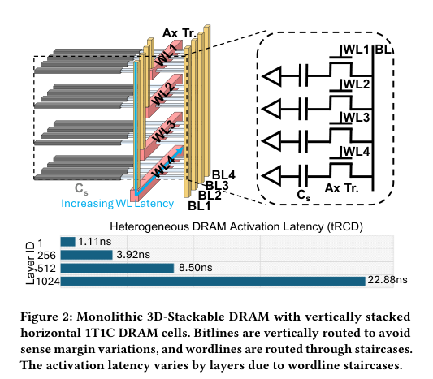
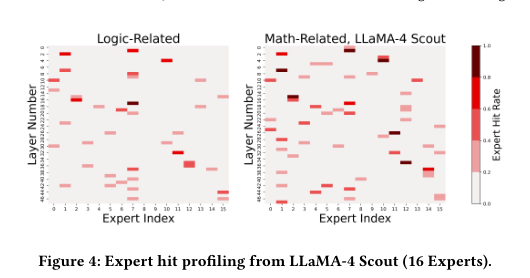
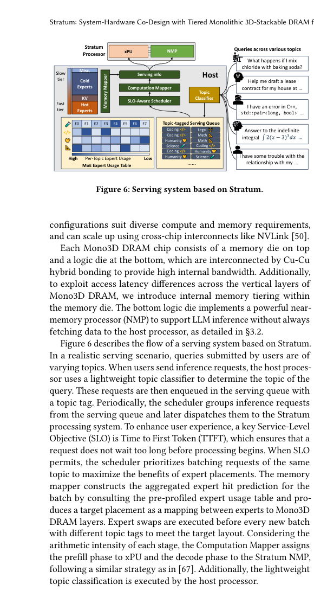
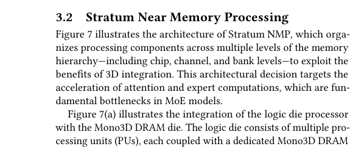
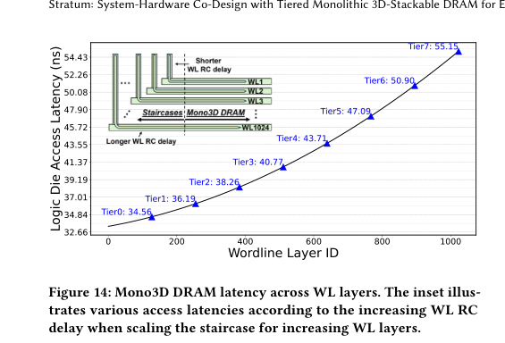

本报告由大模型自动生成，可能存在理解、归纳或数据转述错误；请以原论文为准。 Stratum: System-Hardware Co-Design with Tiered Monolithic 3D-Stackable DRAM for Efficient MoE ServingYue Pan, Zihan Xia, Po-Kai Hsu, Lanxiang Hu, Hyungyo Kim, Janak Sharda, Minxuan Zhou, Nam Sung Kim, Shimeng Yu, Tajana Rosing, Mingu Kang · Proceedings of the 58th IEEE/ACM International Symposium on Microarchitecture · 2025 · 原文 · PDF 报告模型：gemini-3.1-pro-preview / high 这是一篇关于计算机体系结构与硬件协同设计的学术论文，题为《Stratum: System-Hardware Co-Design with Tiered Monolithic 3D-Stackable DRAM for Efficient MoE Serving》。本文针对大型语言模型（LLM）推理阶段的内存墙问题，提出了一种基于单片 3D 堆叠 DRAM（Mono3D DRAM）的近存计算（NMP）系统架构。 为了帮助理解，在此补充本文的最小背景和系统全貌： 本文研究的物理系统由三个主要层级构成：最外层是主机（Host），包含传统的计算核心（xPU，如 GPU），负责请求调度和全局控制；中间层是硅中介层（Silicon Interposer），这是一种 2.5D 封装技术，用于连接主机和内存芯片；最内层是本文设计的核心——Stratum 内存堆栈。这个堆栈采用 3D 封装，最底层是一块逻辑裸片（Logic Die，内部包含本文设计的近存计算处理器 NMP），逻辑裸片上方是通过铜-铜（Cu-Cu）混合键合技术直接垂直堆叠的多层 DRAM 存储晶圆（Mono3D DRAM）。本文的讨论重点在于逻辑裸片（硬件架构）、**DRAM 存储层级划分（硬件特性）以及主机端的任务与数据调度（软件算法）**之间的跨层协同设计。 以下按文章章节逻辑进行详细介绍。 1. Introduction (引言)问题背景： 基于 Transformer 架构的大型语言模型（LLM）正在向极大参数量演进。为了在不显著增加推理计算量的前提下扩充模型容量，混合专家（Mixture of Experts, MoE）架构成为了主流设计（例如 LLaMA 3.1、DeepSeek-V3）。MoE 是一种稀疏激活机制，它在模型层中包含多个并行的子网络（称为“专家”），并在运行时通过一个路由网络（Router），针对输入序列中的每一个词元（Token，文本的最小处理单元），只激活极少数最匹配的专家进行计算。 然而，MoE 模型带来了严峻的硬件部署挑战。其模型参数量极大（专家权重占总尺寸 95% 以上），在推理时需要频繁地将不同专家的权重从内存搬运到计算单元。当前主流的高带宽内存（HBM，一种基于硅通孔 TSV 技术的 2D 堆叠 DRAM）提供的外部带宽仍然不足以满足这种由于专家切换带来的突发海量数据搬运需求，导致 GPU 计算资源严重闲置。 为了解决内存墙问题，之前的研究采用了近存计算（NMP，将计算逻辑放在 HBM 的逻辑底底座上）或存内计算（PIM，将计算逻辑直接嵌在 DRAM 存储阵列中）。但 HBM 基础的 NMP 依然受限于硅通孔（TSV）有限的垂直互连数量和带宽；而 PIM 由于 DRAM 工艺本身不适合制造高性能逻辑晶体管，面临严重的性能、面积和功耗（PPA）开销及散热问题。 本文核心大意： 作者提出使用一种新兴的内存技术——单片 3D 堆叠 DRAM（Mono3D DRAM）。与 HBM 需要将做好的晶圆打孔并键合不同，Mono3D DRAM 是在同一块晶圆上逐层向上制造 DRAM 单元。它消除了昂贵的 TSV，并通过微间距（~1 ）的混合键合技术直接与底部的逻辑裸片连接，提供了比 HBM 庞大得多的内部垂直带宽，且更有利于散热，使得在逻辑底层部署高性能 NMP 成为可能。 但 Mono3D DRAM 存在一个致命的物理缺陷：由于它是逐层向上制造的，连通各层的字线（Wordline, WL）呈现阶梯状物理结构，导致堆叠层数越高，底层和顶层之间的访问延迟差异就越大。如果系统按最差延迟来设计，将浪费大量性能。为此，作者提出了 Stratum 系统，其核心思想是：在硬件上将 Mono3D DRAM 划分为具有不同访问延迟的“内存层（Tiers）”；在系统软件上，利用 MoE 专家被激活的频率与用户提问“主题（Topic）”高度相关的特性，预测专家的使用热度，并将高频“热”专家映射到延迟最低的快速内存层中，从而最大化近存计算的吞吐量。 2. Background (背景知识)2.1 Monolithic 3D-Stackable DRAM (单片 3D 堆叠 DRAM) Mono3D DRAM 采用水平放置的 1T1C（一个晶体管一个电容）DRAM 单元，通过字线（WL）阶梯和垂直位线（BL）连接各层。如图 2 所示，作者展示了这种结构的延迟异构性：由于字线需要通过阶梯向下布线，位于物理结构底部的层（Layer 1）由于寄生电容和电阻更小，其异构 DRAM 激活延迟（Heterogeneous DRAM Activation Latency, tRCD）仅为 1.11ns；而最上层（Layer 1024）的布线最长，延迟高达 22.88ns。这种极端的延迟不平衡促使作者在后续章节提出了“内存层级化（in-memory tiering）”的架构。  2.2 Mixture of Expert LLMs (混合专家大语言模型) MoE 模型的推理过程具有不可预测性。每个 Token 选用的专家只有在运行时通过轻量级的路由网络计算出得分后才能确定。如果在传统 GPU 上运行，这种动态路由会导致专家权重在内存和 GPU 缓存间频繁换入换出。作者通过离线性能分析（Profiling）发现了一个关键现象（如图 4 所示）：专家的调用具有很强的领域亲和力（Domain-specific expert affinity）。例如，处理数学逻辑类问题的提示词时，特定的某几个专家被激活的概率极高（命中率超过 90%）。这一观察构成了本文软件端主题感知调度器的基础。  3. Stratum Overview (Stratum 系统概览)3.1 System Overview (系统概览) 如图 6 所示，Stratum 系统的控制流发生主机（Host）端。当用户的推理请求到达时，主机上的“主题分类器（Topic Classifier，一个轻量级的自然语言分类模型）”首先判断请求的主题（如数学、编程等），并将其打上标签放入队列。为了提升用户体验，一个关键的服务级别目标（SLO）是首词元时间（Time to First Token, TTFT），它确保请求在开始处理前不会等待太长时间。在 SLO 允许的情况下，系统中的“服务级别目标（SLO）感知调度器”会尽量把同一主题的请求打包成一个批次（Batch），以保证这些请求大概率会使用同一批专家。随后，“内存映射器（Memory Mapper）”根据预先离线统计的“每个主题-专家使用频率表”，计算出当前批次的专家映射方案，指示硬件将接下来最可能用到的专家权重通过局部搬运，放置到 Mono3D DRAM 中延迟最低的“快速层”中。  3.2 Stratum Near Memory Processing (近存处理架构) 如图 7 所示，Stratum 的逻辑裸片 NMP 架构分为芯片级（Chip）、通道级（Channel）和库级（Bank）。 
4. Stratum Operator Mapping and Execution (算子映射与执行)本节解释神经网络的具体计算量是如何在 Stratum 硬件上流动的。 4.1 Expert Processing (专家处理) MoE 专家层的计算包含三个串联的通用矩阵乘法（GeMM）。假设当前批次分配给某专家的输入隐藏层矩阵为 （尺寸为 ，其中 为 Token 数量， 为隐藏层维度； 均无量纲，原文未说明单位，下标 仅用于区分变量）。计算流为： 先分别乘以两个上投影权重矩阵 和 （尺寸均为 ， 为中间维度； 均无量纲，原文未说明单位，下标 仅用于区分变量）得到中间结果矩阵 和 （原文未说明单位，下标 仅用于区分变量）。对 应用激活函数后与 进行哈达玛积（元素级逐位相乘）得到组合结果矩阵 （原文未说明单位，下标 仅用于区分变量）。最后 乘以下投影权重矩阵 （尺寸为 ；原文未说明单位，下标 仅用于区分变量）得到输出矩阵 （尺寸为 ；原文未说明单位，下标 仅用于区分变量）。 映射策略： 为了解决专家计算间的负载不平衡，Stratum 采用张量并行（Tensor Parallelism），即系统一次只集中所有 PU 计算一个专家。为了最大化利用并行性且减少通信，权重矩阵 和 在较长的 维度上被垂直切分，分配给不同 PU；而 则水平切分。这种切分方法使得前两步 GeMM 和激活操作完全在 PU 本地完成，直到最后一步计算 时，才需要通过片上环形网络执行 Reduce-Scatter（规约-分散，一种集体通信协议，用于将各节点的部分和相加并将结果分布回各节点）操作。 4.2 Attention Processing (注意力处理) 大模型推理的另一个瓶颈是读取键值缓存（KV Cache）。在注意力机制计算中，Stratum 采用注意力头级并行（Head-level parallelism）。由于不同注意力头的计算没有数据依赖，多个头（Heads）被分配给环形网络上相邻的多个 PU 组成的“PU 组”。 对于 Softmax 这种需要全局信息的归一化操作，每个 PU 独立计算其所分配 Token 的局部最大值和指数和，随后仅通过环形网络交换极少量的标量数据即可推导出全局值，从而极大地节省了片上通信带宽。 4.3 Design with Physical Constraints (物理约束下的设计) 这一节体现了体系结构与 EDA（电子设计自动化）在功耗、热分布和物理面积分析方面的跨层联系。逻辑裸片的微架构参数（MAC 单元数量）直接受限于封装热分析和 TSV 布局分析给出的边界。
5. Stratum Algorithm-System Co-Optimizations (算法-系统协同优化)5.1 Expert Usage Prediction (专家使用预测) 为了识别前文提到的“请求主题”，作者在主机端部署了一个基于 DistillBERT（具有 6700 万参数的轻量预训练模型）的主题分类器。由于其体量小，在正常请求速率下，带来的推理延迟开销不到 2%。 5.2 Data Placement Strategy (数据放置策略) 系统将数据分为四类：热专家权重（高频命中）、冷专家权重、KV Cache，以及非 NMP 数据（不由逻辑层处理的杂项参数）。 作者通过算法 1 (Algorithm 1: Expert Weight Placement) 定义了如何将物理 DRAM 行映射到层级结构中：
6. Evaluation (实验评估)6.1 实验设置
6.2 硬件评估 如图 14 所示，作者展示了 Mono3D DRAM 从 0 层到 1024 层字线 RC 延迟的线性增长趋势。以此为依据，作者将存储划分为 8 个时间层（Tier），最快层比最慢层的访问速度快 1.6 倍（1.6x faster access than the slowest tier）。 在功耗与面积预算分析中，基于前文的物理约束公式，在 104W 内存功耗和 45W 逻辑功耗上限内，NMP 被配置为具有 64k 个 MAC 单元，峰值算力达 128 TFLOPS。逻辑裸片面积 76.63 ，远低于 121 的物理上限。  6.3 系统评估
7. Related Works & 8. Conclusion (相关工作与总结)最后，作者回顾了现有的 3D 堆叠 DRAM 和 PIM/PNM 技术，指出它们都没有解决在单片 3D DRAM 中垂直缩放带来的不可避免的延迟异构问题。 文章总结道，Stratum 首次提出利用高密度的 3D 混合键合 Mono3D DRAM 进行大模型 MoE 推理服务。其成功得益于软硬协同：硬件层面上设计了分层内存机制和专用的 NMP 架构；软件系统层面上利用请求主题预测专家的使用模式。 全文主线与局限性总结主线逻辑： 大模型推理面临内存墙问题 HBM NMP 垂直带宽受限，PIM 性能与发热受限 引入不需要 TSV、内部带宽极大的单片 3D DRAM (Mono3D DRAM) 遇到 Mono3D 顶层与底层物理延迟差异巨大的新问题 在硬件设计支持不同层级延迟的近存控制器，在软件设计感知提示词“主题”的调度器 预测并把高频数据放入快层，低频数据放入慢层，有效缓解物理缺陷带来的影响，实现吞吐量与能效的数量级提升。 关键假设与局限性（不能过度推广的结论）：
|